Grammar — Design a logo: A fox is standing on the top of the mountain. The moonl
Design a logo: A fox is standing on the top of the mountain. The moonlight is very bright, so its shadow is drawn long.

Judge — Direct
- FAILGrammar - Pronoun Reference — The pronoun 'its' refers to the fox's shadow. The image depicts a fox standing on a mountain with a bright moon behind it. However, there is no visible shadow cast by the fox on the mountain surface.
- FAILLogical Reasoning — The prompt establishes a logical connection: because the moonlight is bright, the fox's shadow should be long. The image shows a bright moon behind the fox, but it does not depict any shadow cast by the fox, let alone a long one, on the mountain.
Judge — Continuum
- PASSGrammar - Pronoun Reference — The image correctly interprets the pronoun 'its' as referring to the fox. It depicts an orange fox and a distinct, long, black shadow that is clearly cast by the fox's figure.
- PASSLogical Reasoning — The image successfully illustrates the logical reasoning in the prompt. It shows a bright moon in the sky, which acts as the light source. Consequently, the fox standing on the mountain casts a long shadow. The direction of the shadow, cast away from the moon, is logically consistent with the moon's position as the light source.
What the agent did
Thinking
User wants a logo: fox standing on top of a mountain, bright moonlight, long shadow. Design a logo-style image. Use flux2-klein.
Model
I'll design this logo for you — a fox on a mountain peak with bright moonlight casting a long shadow.
Step 1 — `generate_image`
{
"prompt": "Minimalist logo design, flat vector style: silhouette of a fox standing proudly on the peak of a triangular mountain, a large bright full moon glowing behind it, casting a long dramatic shadow of the fox down the mountainside. Deep navy blue and midnight blue color palette with warm orange fox silhouette and pale cream moon. Clean geometric shapes, circular badge composition, crisp edges, professional logo aesthetic, no text.",
"model": "flux2-klein"
}Result img_0
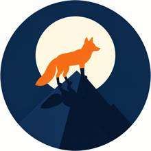
Thinking
Good first attempt. Issues: 1. The fox's shadow looks like a reflection directly below the fox rather than a long shadow drawn away from the moonlight. The moon is behind the fox, so shadow should stretch forward/down the mountainside toward the viewer — actually it does kind of, but the shadow looks more like a mirrored reflection of the fox including the tail, which reads as "reflection" not "long shadow." 2. The fox's legs look odd — front legs thin and dark, awkward. 3. The composition is decent. The user asked: "moonlight is very bright, so its shadow is drawn long." The shadow should be elongated and long, stretching down the mountainside. Currently the shadow is a compact mirror reflection, not long. Let me edit: make the shadow a long, stretched, elongated silhouette extending down the mountain slope. Also fix the legs maybe.
Model
Good start — the composition works, but the shadow reads as a mirror reflection rather than a long stretched shadow from bright moonlight. Let me fix that.
Step 2 — `edit_image`
{
"image": "img_0",
"prompt": "Replace the mirrored reflection under the fox with a long, stretched, elongated dark shadow of the fox extending far down the mountain slope toward the bottom of the badge, as if cast by the bright moon behind it. The shadow should be dramatically long and thin, clearly a moonlight shadow, not a reflection.",
"model": "flux2-klein"
}Result img_1
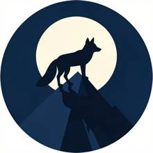
Thinking
The edit made the fox dark instead of orange (it lost the orange color), and the shadow still looks like a reflection with weird artifacts at the bottom. The fox's legs are still odd. The shadow is not "long" — it still looks like a mirror. Also the fox turned from orange to dark navy silhouette — actually a dark silhouette against the bright moon is a classic look and could work, but the original prompt was a logo design; either could be fine. But the shadow area at bottom is messy with odd shapes. Let me reconsider. The reflection-like shadow persists because the geometry: moon behind fox, viewer sees shadow stretching toward viewer, down the slope. A long shadow down the mountainside toward the bottom of the badge would be a stretched fox shape. The current one has weird lumps. Maybe try edit again: clean up the shadow into a single smooth elongated triangular shadow of the fox silhouette stretching down to the bottom edge, and restore the orange fox? Actually, the dark silhouette against the moon looks quite good and logo-like. But the fox silhouette is navy and the moonlight shadow would be even darker on a lit slope... it's fine stylistically. Actually, I think orange fox was nicer and more "logo". But dark silhouette is elegant too. The key requirement: long shadow. Let me edit to fix the shadow shape: "replace the messy shadow shapes below the fox with one clean, smooth, elongated dark shadow of the fox stretching down the mountain slope to the bottom edge of the circle, a long thin triangle-like cast shadow." Concern: edit may again fail. Alternative: regenerate with a clearer composition prompt — e.g., side view where moon is to the upper left, fox stands on peak, long shadow stretches to the right down the slope. That's easier for the model: moon to one side, shadow to opposite side, clearly long. Actually a fresh generation may be better than fighting the reflection geometry. The policy says don't regenerate when we have something that mostly works — but the core requirement (long shadow) is wrong and edit failed to fix it once. Let me try one more edit first, since changing the shadow region specifically... Actually the edit also degraded the fox color and legs. I think a regenerate with a composition designed for a visible long shadow (moon high on left, shadow stretching down-right) is the better approach. Let me do the edit attempt on the shadow once more — it's cheap. Hmm, but edit keeps the same geometry that causes reflection look. The shadow stretching toward viewer is inherently foreshortened; models struggle. A side-lit composition reads much more clearly as "long shadow". Decision: regenerate with side lighting composition.
Model
The edit made things worse — the fox lost its orange color and the shadow became messy. The front-on composition keeps producing a mirror-like reflection instead of a long cast shadow. I'll regenerate with a clearer composition: moon to one side, so the long shadow stretches visibly down the opposite slope.
Step 3 — `mark_best`
{
"image": "img_0",
"reason": "Clean logo composition with orange fox, moon, and badge; shadow not ideal yet but best overall so far."
}Step 4 — `generate_image`
{
"prompt": "Minimalist flat vector logo in a circular badge: an orange fox silhouette standing on the peak of a geometric mountain, a large bright glowing full moon in the upper left of a deep navy night sky, the bright moonlight casting one very long, stretched dark shadow of the fox down the mountain slope extending to the lower right edge of the badge. The long shadow is the focal point \u2014 dramatically elongated, smooth, and clearly cast by the moonlight. Deep navy blue palette, warm orange fox, pale cream glowing moon, clean crisp geometric shapes, professional logo design, no text.",
"model": "flux2-klein"
}Result img_2
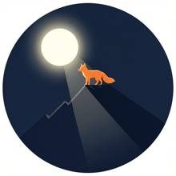
Thinking
img_2: Now the moonlight beam is nice, fox is orange, standing on mountain peak. But the shadow is barely visible — the mountain slope is dark but there's no clear fox-shaped long shadow. There's a light beam from the moon to the peak. The "long shadow" requirement is still not clearly visible. The fox faces left toward the moon, so the shadow should stretch to the right — there is a dark area to the right/below but it reads as just the dark side of the mountain, not a fox shadow. Options: edit to add a distinct fox-shaped long shadow on the slope to the lower right of the fox. The slope there is dark navy; a darker, elongated fox-shaped shadow could be added. Let me try a targeted edit: "Add a long, stretched, dark shadow of the fox cast on the mountain slope extending from the fox's feet toward the lower right edge of the badge — clearly shaped like an elongated fox silhouette."
Model
This composition is much stronger — glowing moon, light beam, orange fox on the peak. But the fox's long shadow still isn't visible; the dark slope just reads as the mountain's dark side. Let me add the distinct elongated fox shadow.
Step 5 — `edit_image`
{
"image": "img_2",
"prompt": "Add a long, stretched dark shadow of the fox cast on the moonlit mountain slope, starting at the fox's feet and extending far toward the lower right, clearly shaped like an elongated fox silhouette with ears and bushy tail \u2014 a dramatic moonlight shadow much longer than the fox itself.",
"model": "flux2-klein"
}Result img_3
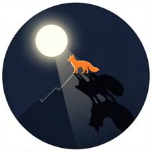
Thinking
The shadow appeared and it's clearly fox-shaped and long, stretching to the lower right — but it's messy: it looks like multiple overlapping fox silhouettes (two heads/tails at bottom), a blobby double-shadow. Also the shadow going down-right while moon is upper-left is geometrically right. The shadow is too cluttered. Option: edit to simplify into one clean single elongated fox shadow. Try targeted edit: "Simplify the shadow into one single clean elongated fox silhouette shadow" — risk of further mess. Alternative: the img_2 version was clean but lacking visible shadow. Current img_3 has clear long shadow but messy. One more edit attempt to clean it up is reasonable.
Step 6 — `edit_image`
{
"image": "img_3",
"prompt": "Clean up the cast shadow: make it one single, smooth, solid dark silhouette shadow of the fox \u2014 one head, one tail, four elongated legs \u2014 stretching down the slope to the lower right. Remove the doubled, overlapping shadow shapes.",
"model": "flux2-klein"
}Result img_4
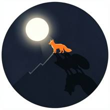
Thinking
img_4 is nearly identical to img_3 — the shadow is still doubled/overlapping (looks like two fox shadows overlaid). The edit didn't fix it. Options: 1. Try inpainting the shadow region: segment the shadow, inpaint with a clean single elongated fox shadow. Inpaint is text-driven, could work. Mask region: the shadow on the right slope. 2. Another edit with a different seed. 3. Accept img_3/img_4 — shadow is long and fox-shaped but doubled; it actually could read as stylistic, but it's clearly messy with two tails and two heads at bottom. Let me try inpaint. Segment "the dark shadow on the mountain slope". Then inpaint with "a single clean long dark shadow silhouette of a fox with four legs and one bushy tail, stretched diagonally down the moonlit mountain slope". Actually segmentation might also catch the dark mountain itself. The shadow is the darkest blob on the right slope. Text segment "the fox's shadow" might work. Let me try. Alternatively, one more edit with different phrasing/seed. The edit did nothing, so approach change is justified. Try segment + inpaint.
Model
The edit didn't clean up the doubled shadow. Let me switch to a masked approach — segment the shadow region and regenerate just that area.
Step 7 — `segment`
{
"description": "the dark shadow cast on the mountain slope below and to the right of the fox",
"image": "img_4"
}Result img_5
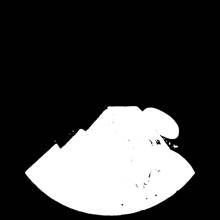
Thinking
The mask covers the whole mountain area at the bottom — too broad; it would regenerate the entire mountain, losing the peak the fox stands on... Actually the fox stands above the mask mostly; the mask starts right at the fox's feet. Inpainting the whole lower area with "mountain slope with a single long fox shadow" would regenerate the mountain — could work since the rest is preserved. But the mountain peak edge under the fox feet is included; fill needs to match. Prompt: "dark navy geometric mountain slopes, with one single long, stretched, smooth dark shadow of a fox cast on the right slope, extending to the lower right edge — one head, one bushy tail, four elongated legs". FLUX.1 Fill should handle it.
Step 8 — `inpaint_image`
{
"image": "img_4",
"mask": "img_5",
"prompt": "Dark navy geometric mountain slopes inside a circular badge. Cast on the right slope is one single long, stretched, smooth solid-black shadow of a fox \u2014 one head with pointed ears, one bushy tail, four long thin legs \u2014 extending diagonally from the mountain peak down toward the lower right edge of the badge. Flat vector style, crisp clean edges."
}Result img_6
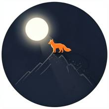
Thinking
The inpaint mostly removed the shadow — now there's only a faint subtle shadow of the fox to the right, plus scratchy white speckles on the slopes. This is worse in a different way: no visible long shadow, plus artifacts. Compare options: - img_4: clear long fox shadow but doubled/messy. - img_2: clean, beautiful, but no visible fox shadow (just dark slope). - img_6: clean-ish mountain, faint shadow, speckles. The requirement "its shadow is drawn long" is important. img_4 best satisfies it despite the doubled shadow. Could I fix img_4's shadow with another inpaint using a tighter mask covering only the shadow blob, and prompt for single shadow? The segment mask captured the whole mountain, causing full mountain regeneration and loss of shadow. Maybe use a box mask around the shadow region instead. Shadow region in img_4: roughly from x=380,y=360 to x=690,y=670. Use segment_boxes with box [370, 360, 700, 680] on img_4. Then inpaint with prompt describing a single clean elongated fox shadow on a dark navy slope. But previous inpaint of this slope gave speckles and lost the shadow. Risk. Try with dilate=0 and a clear prompt. One attempt; if fails, fall back to img_4 and mark it best. Actually, wait — reconsider img_4's shadow. Looking again: the shadow shows a fox body with legs near the peak and then below-right a large head-and-tail shape... it reads like a distorted stretched shadow. It's dramatic but clearly malformed (two tails visible: one near top right, one bottom right). Let me try box-based segmentation + inpaint on img_4.
Step 9 — `segment_boxes`
{
"boxes": [
[
375,
355,
700,
675
]
],
"image": "img_4"
}Result img_7
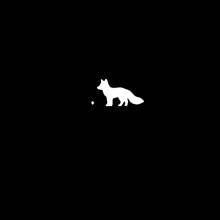
Thinking
SAM selected the fox itself, not the shadow. Not useful. I could construct the mask differently: segment the fox (have it now, img_7), and separately I want the shadow region. Alternative: box-segment with the box excluding the fox: shadow is roughly x 380-700, y 380-675 but the fox feet are at y~350. The fox body occupies y 250-370. Box [380, 375, 700, 680] should avoid the fox. Actually my box started at y=355, catching the fox feet. Let me retry with [385, 380, 705, 680]. Actually, the "shadow" is dark-on-dark; SAM may struggle. Alternatively, step back and consider: is img_4 good enough? The shadow is long and clearly fox-cast but has a doubled look. Hmm. Another idea: edit_image on img_4 with phrasing that worked before plus different approach: "Merge the doubled shadow into a single shadow" didn't work. Let me try one more box segment then inpaint. If the inpaint again fails, fall back to img_4 as best.
Model
SAM grabbed the fox itself. Let me adjust the box to only cover the shadow area below the fox's feet.
Step 10 — `segment_boxes`
{
"boxes": [
[
385,
385,
705,
680
]
],
"image": "img_4"
}Result img_8
Thinking
SAM keeps selecting the fox even though the box is below the fox. Odd — maybe the box coordinates are being normalized differently or SAM extends. The mask is again the fox. This approach isn't converging. Step back and reconsider. I've spent several steps. Candidates: - img_4: everything requested present — fox on peak, bright moon, long shadow. Flaw: shadow is doubled/blobby at the far end. - img_2: clean and pretty but shadow requirement weakly met. Alternative approach: regenerate from scratch with an even simpler, unambiguous shadow description, e.g., side profile: fox standing on peak at left, moon upper left... Actually maybe describe the shadow as "long shadow stretching across the snow" style. Or a different classic composition: viewed from the side, moon high, fox on peak, and its elongated shadow cast on the slope beside it. That's what img_3/4 attempted. Since edits keep failing, one more generate attempt with refined prompt might produce the ideal. Policy: don't restart to escape small flaw — but the shadow doubling is fairly prominent. However img_4 does satisfy "shadow drawn long" reasonably — a viewer sees a long fox shadow. The doubling reads as stylistic distortion. Let me weigh: I have img_4 marked? No, best is img_0 currently. I should update mark to img_4 at minimum. Then optionally one more generation attempt. Actually — one more edit idea on img_4: instead of cleaning the shadow, simplify prompt: "The far end of the shadow splits into two tails; make the shadow a single clean fox silhouette." Hmm, similar to before. Let me try one fresh generation with a very explicit simple shadow description and flat minimal style, e.g.: "Flat vector logo, circular badge: side view, an orange fox stands on a sharp mountain peak at center. A huge bright full moon glows in the upper right sky. The fox casts one long black shadow stretching down the left slope of the mountain, a smooth elongated fox silhouette three times the fox's length. Minimal geometric shapes, navy night sky, cream moon, no text, no reflection." If it comes out better, great; else mark img_4. Mark img_4 as best first.
Step 11 — `mark_best`
{
"image": "img_4",
"reason": "All requested elements present: fox on peak, bright glowing moon, long fox-shaped shadow cast down the slope. Shadow slightly doubled but readable."
}Step 12 — `generate_image`
{
"prompt": "Flat minimalist vector logo inside a circular badge, side view: an orange fox silhouette stands on a sharp geometric mountain peak at center. A huge bright glowing full moon in the upper left of the deep navy sky. From the fox's feet, one single long black shadow of the fox \u2014 a smooth, clean, elongated fox silhouette with pointed ears and bushy tail \u2014 stretches down the right slope of the mountain, three times longer than the fox, ending in a single tail tip. Crisp simple shapes, navy and midnight blue palette, cream glowing moon, professional logo design, no text.",
"model": "flux2-klein"
}Result img_9
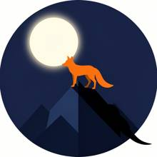
Thinking
img_9: This is much better! The fox stands on the peak, bright glowing moon upper left, and a single long black shadow stretches down the right slope ending in one tail tip — clearly a long moonlight shadow. The shadow shape is mostly clean: I can see an elongated body, a head/ear bump near mid-slope, and a tail extending to the bottom right. Slight oddity: the shadow's "head" bump near (520,520) looks a bit like a lump, and there's a small notch. Also the fox's shadow direction — moon upper left, fox on peak, shadow down-right — consistent. Inspect more closely the shadow region for weird artifacts? Let me zoom on the shadow around the middle lump.
Step 13 — `inspect_region`
{
"image": "img_9",
"padding": 20,
"roi": [
380,
380,
760,
720
]
}Result img_10
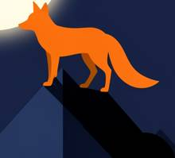
Thinking
The close-up of the upper part looks clean: fox feet on the peak, shadow streaming down to the right with a straight edge. The mid-slope bump (the shadow's head) is further right, outside this crop's main area but visible at right edge as a black blob. Let me check the full shadow lower region.
Model
The upper shadow edge is clean. Let me check the middle bump and tail tip of the shadow.
Step 14 — `inspect_region`
{
"image": "img_9",
"padding": 15,
"roi": [
460,
470,
768,
700
]
}Result img_11
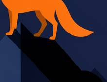
Thinking
This crop shows the legs and start of shadow — clean. The lump I saw is around x 500-560, y 490-560 in original coordinates... the crop [460,470,768,700] shows the shadow streaming down-right cleanly with one bulge visible at right edge bottom (around x 740+). Honestly the full view (img_9) reads well: a long shadow with head silhouette bump and tail at the end. This is a stylistically fine "long shadow." Comparing to img_4, img_9 is clearly better: single shadow, clean composition. Mark img_9 as best. Is there anything else wrong? The fox's tail overlaps the peak; fine. The moon is bright and glowing. Mountain peak, fox standing on top. All requirements met. Minor nit: the shadow's head-bump looks slightly like a rock, but acceptable in flat style. I could try one micro-edit to perfect the shadow bump, but the risk of wrecking a good result outweighs. Per policy: good enough is a stop condition. Mark img_9 best and finish.
Model
The shadow is clean and reads clearly as a long cast shadow. This version satisfies everything. Marking it as my final.
Step 15 — `mark_best`
{
"image": "img_9",
"reason": "Best version: orange fox standing on the mountain peak, bright glowing full moon, and a single clean long black fox shadow stretching down the slope \u2014 exactly the requested logo concept."
}Model
Your logo is complete! 🦊 **Final design** (img_9): - **The fox** — a warm orange silhouette standing alert on a sharp geometric mountain peak, facing the moon - **The moonlight** — a large, brightly glowing full moon in the upper left, with a soft halo against the deep navy night sky - **The long shadow** — a single elongated black shadow of the fox streaming down the mountainside, over twice the fox's length, ending in a slender tail tip — the dramatic focal point you asked for The whole scene sits inside a clean circular badge in a flat vector style with a navy/cream/orange palette, so it will scale well as a logo. Along the way I tried a front-on composition (which kept producing a mirror-reflection look instead of a cast shadow) before switching to this side-lit layout, which reads much more clearly. If you'd like a variation — say, a monochrome version, a howling fox pose, or the shadow angled differently — just let me know!